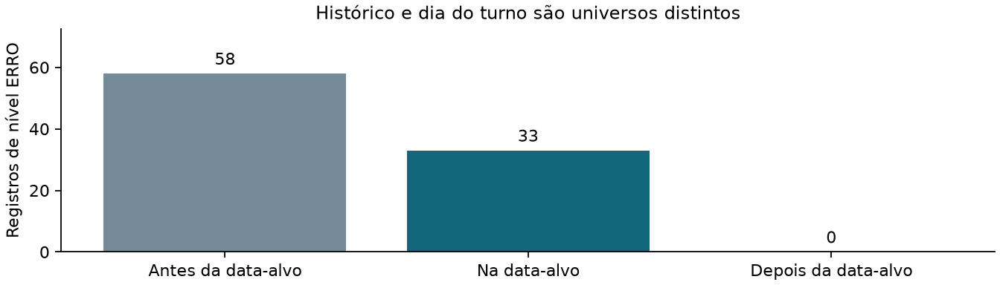

Etapa 5 · eventos operacionais · amostra dirigida
O que os logs registram e o que ainda precisa de esclarecimento
Foram analisados 48 arquivos de 24 seções nos dois turnos: 49 membros textuais, incluindo 1 aninhado. Há 287.649 registros válidos, dos quais 158.103 nas datas-alvo.
Nas datas-alvo: 33 registros de nível ERRO em 24 unidades seção/turno; 596 registros de nível ALERTA. Há 33 apontamentos em 28 unidades, com possível sobreposição entre motivos.
São contagens de mensagens, não pessoas, votos afetados ou interrupções físicas medidas. O nível ERRO é atribuído pelo software que gerou o log. A seleção é dirigida e não permite estimar frequências nacionais. Não se atribuem causas ou fraude aos eventos.

As janelas são definidas separadamente para cada turno. A mesma linha histórica pode estar em arquivos de ambos os turnos; estes não são somados como eventos únicos da eleição.
Método e limites
Os 48 ZIPs originais são conferidos por SHA256 e tamanho. Todos os membros logd.dat, inclusive o aninhado, são lidos em memória com CRC e limites. O layout observado tem seis campos separados por tabulação e texto Latin-1; o token hexadecimal final é conferido apenas na sintaxe. Não se verifica o algoritmo desse token nem se afirma homologação do layout.
As datas-alvo configuradas são 04/10/2026 e 25/10/2026. Registros anteriores e posteriores ficam em categorias separadas; os arquivos do segundo turno podem carregar histórico do primeiro. Os horários são os declarados no próprio log, sem fuso autenticado. Retrocessos são medidos na ordem física do mesmo membro; relógios de membros distintos não são unidos. Não se deduplicam linhas automaticamente.
Presença de urna pronta, início de encerramento e geração do BU não demonstra cobertura contínua. Falta de uma mensagem não demonstra ausência da operação. Ligações entre marcos são contadas apenas dentro do mesmo membro e quando a ordem temporal permite; não se mede duração de paralisação nem se presume troca de equipamento por identificadores distintos.
A conferência anterior das assinaturas de hardware e hashes do ZIP é vinculada por SHA256. Confiança até raiz oficial e revogação continuam pendentes na etapa PKIX. A leitura de um log não supre essa evidência. Também permanecem abertos CEPESC, layout oficial, BU de origem independente e esclarecimentos operacionais/documentais.
Os eventos são classificados por mensagens fixas locais. Não se publicam mensagens brutas, nomes, identificações pessoais, teclas, biometria ou sequência/horário de votação individual. A explicação oficial da Justiça Eleitoral sobre logs e sigilo é de 2022; não é um dicionário de eventos de 2026.
Que tipos de erro foram registrados?
A posição dos erros é calculada apenas quando o mesmo membro tem marcos compatíveis, relógio sem retrocesso na data-alvo e um único identificador de hardware. “Após o início do encerramento” não comprova que a operação terminou ou que não houve efeito. Sem essas condições, o contexto fica não classificável. Nenhuma mensagem é declarada normal ou explicada sem documento operacional.
Apontamentos para revisão
Motivos podem se sobrepor. Erro registrado não demonstra divergência nos totais. Contagens antes/depois, regras e evidência por unidade estão nas tabelas completas.
Unidades nas datas-alvo
Ligação e bateria são mensagens, não quantidades comprovadas de reinícios ou falhas. “Presentes” indica os três marcos, sem provar continuidade. A comparação entre turnos é descritiva e não presume o mesmo equipamento.
48 unidades exibidas
Tabelas, fontes e reprodução
Próximo passo documental
Confrontar os apontamentos com atas de seção e registros de atendimento/substituição, especialmente onde há conteúdo aninhado, identificadores distintos ou mensagens de erro. Nenhuma causa foi confirmada apenas pelo log; nenhum contato externo foi enviado.